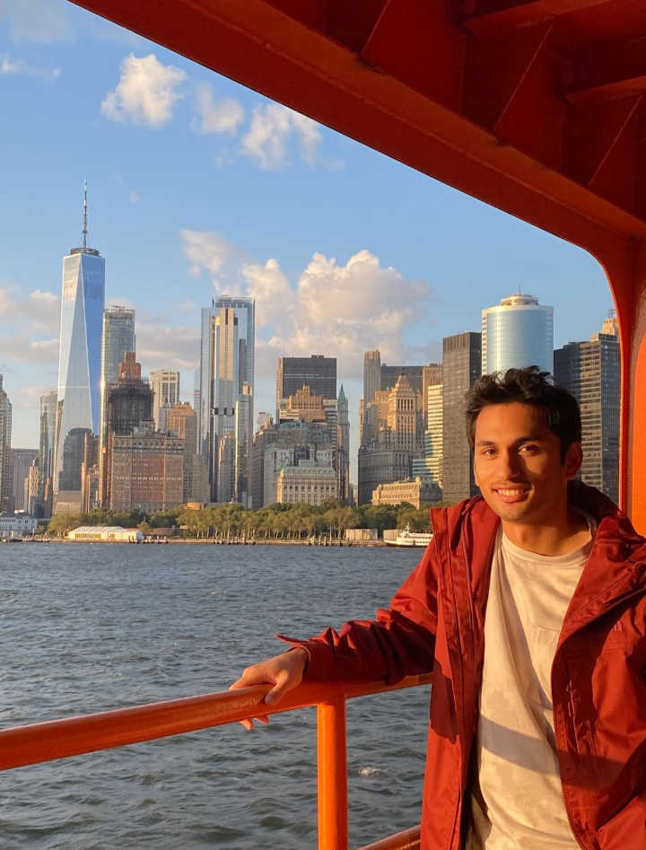
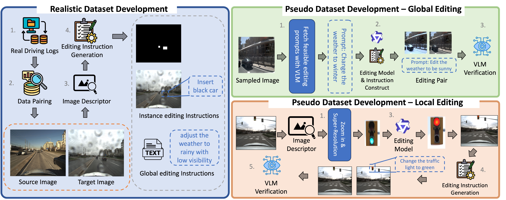
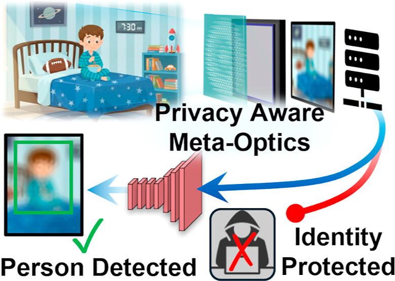
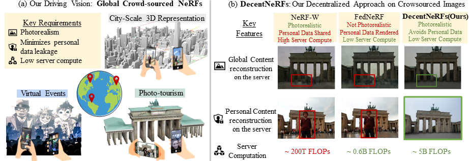
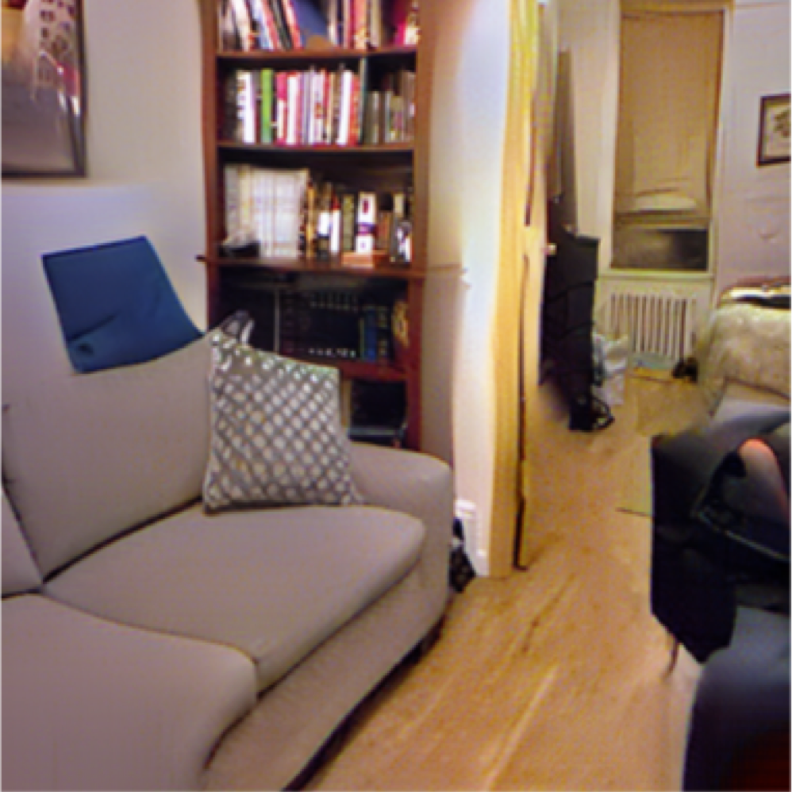
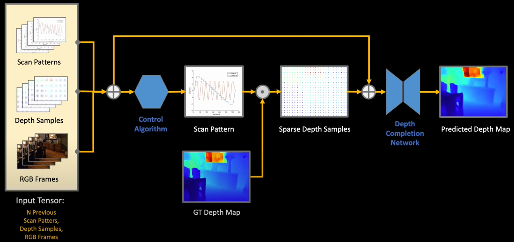
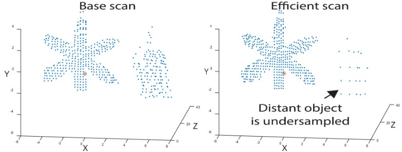
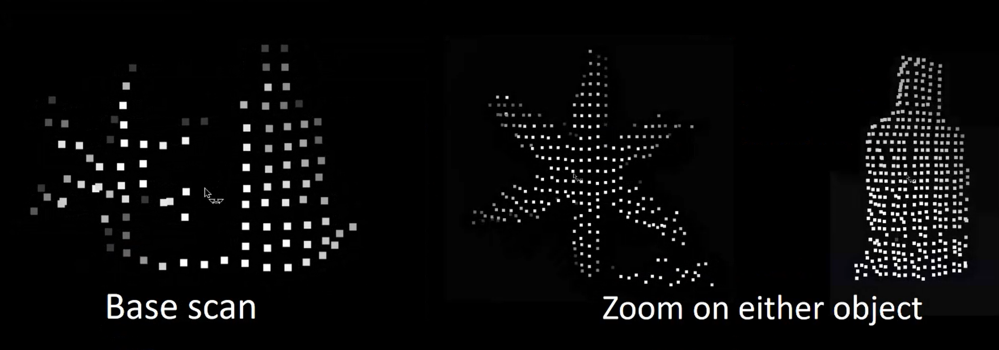
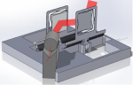

Zaid Tasneem
I'm a Research Scientist at NEC Labs America working on Agentic Simulation for autonomous driving leveraging Generative AI under Prof. Manmohan Chandraker . Before that, I was a visiting researcher at MIT under Prof. Ramesh Raskar .
I received my Ph.D. on the topic, "Privacy-Aware Computational Cameras and Vision Algorithms" from Rice University advised by Prof. Ashok Veeraraghavan , my M.S. from University of Florida under Prof. Sanjeev Koppal , and my B.S. from IIT Kanpur .
Research Interests: Agentic Simulations, Generative AI, Privacy in Vision, Diffusion Models, World Models, 3D Reconstruction, Autonomous Driving, Computational Imaging.
Email /
CV /
Scholar /
LinkedIn /
Github

Selected Publications
"white SUV on the opposite left lane speeds up and turns left"
LangDriveCTRL: Natural Language Controllable Driving Scene Editing with Multi-modal Agents
Yun He ,
Francesco Pittaluga ,
Ziyu Jiang ,
Matthias Zwicker ,
Manmohan Chandraker ,
Zaid Tasneem
arXiv, 2026
project page /
paper
Agentic simulator for controllable driving scene editing using natural language.
What if Eye...? Computationally Recreating Vision Evolution
Kushagra Tiwary ,
Aaron Young ,
Zaid Tasneem ,
Tzofi Klinghoffer ,
Akshat Dave ,
Tomaso Poggio ,
Dan-Eric Nilsson ,
Brian Cheung ,
Ramesh Raskar
Science Advances
project page /
paper
News:
Science /
Phys.org /
MIT News
Evolutionary RL framework to co-evolve eye morphology and neural processing in embodied agents.
HorizonForge: Driving Scene Editing with Any Trajectories and Any Vehicles
Yifan Wang ,
Francesco Pittaluga ,
Zaid Tasneem ,
Chenyu You ,
Manmohan Chandraker ,
Ziyu Jiang
CVPR, 2026
project page /
paper
Video diffusion model for extreme ego-trajectory changes and vehicle insertion in driving videos.

HorizonWeaver: Generalizable Multi-Level Semantic Editing for Driving Scenes
Mauricio Soroco ,
Francesco Pittaluga ,
Zaid Tasneem ,
Abhishek Aich ,
Bingbing Zhuang ,
Wuyang Chen ,
Manmohan Chandraker ,
Ziyu Jiang
CVPR, 2026 (Findings)
project page /
paper
Image editing model for multi-level semantic driving scene editing.

Privacy-aware Meta-Optics for Person Detection
Zaid Tasneem ,
Yongyi Zhao ,
Johannes E. Froch ,
Ashok Veeraraghavan
ACS Photonics, 2026
paper
Privacy-preserving person detection using learned meta-optic phase masks.

DecentNeRFs: Decentralized Neural Radiance Fields
Zaid Tasneem ,
Akshat Dave ,
Abhishek Singh ,
Kushagra Tiwary ,
Praneeth Vepakomma ,
Ashok Veeraraghavan ,
Ramesh Raskar
ECCV, 2024
project page
Crowdsourced NeRFs at a global scale that prevents leakage of users' personal content

Learning Phase Mask for Privacy-Preserving Passive Depth Estimation
Zaid Tasneem ,
Giovanni Milione ,
Yi-Hsuan Tsai ,
Xiang Yu ,
Ashok Veeraraghavan ,
Manmohan Chandraker ,
Francesco Pittaluga
ECCV, 2022
project page /
video /
demo
World's first privacy-preserving depth camera.

Towards a MEMS-based Adaptive LIDAR
Francesco Pittaluga*
Zaid Tasneem* ,
Justin Folden ,
Brevin Tilmon ,
Ayan Chakarabarti ,
Sanjeev Koppal
3DV, 2020
project page /
video
RGB guided adaptive depth sensing for MEMS LiDAR.

Adaptive fovea for scanning depth sensors
Zaid Tasneem ,
Charuvahan Adhivarahan ,
Dingkang Wang ,
Huikai Xie ,
Karthik Dantu ,
Sanjeev Koppal
IJRR, 2020
paper
Foveating Depth Sensor on Mobile Robot

Directionally Controlled TOF Ranging for Mobile Sensing Platforms
Zaid Tasneem ,
Dingkang Wang ,
Huikai Xie ,
Sanjeev Koppal
RSS, 2018
project page /
video
World's first adaptive depth sensor.

An integrated forward-view 2-axis mems scanner for compact 3D LiDAR
Dingkang Wang ,
Stephan Rojas, Alexander Shuping,Zaid Tasneem ,
Sanjeev Koppal ,
Huikai Xie
IEEE NEMS, 2018 (Best Student Paper)
paper
Compact MEMS based LiDAR.
Patents
Private and Decentralized 3D from Crowd Sourced Image Data
2025
A Dave, R Raskar, A Singh, Z Tasneem, K Tiwary, A Veeraraghavan, P Vepakomma
US Patent App. 19/195,045
Fast foveation camera and controlling algorithms
2023
SJ Koppal, Z Tasneem, W Dingkang, H Xie, BJ Timon
US Patent 11,800,205
Learning privacy-preserving optics via adversarial training
2022
F Pittaluga, G Milione, X Yu, M Chandraker, YH Tsai, Z Tasneem
US Patent App. 17/412,704
{kind=link}